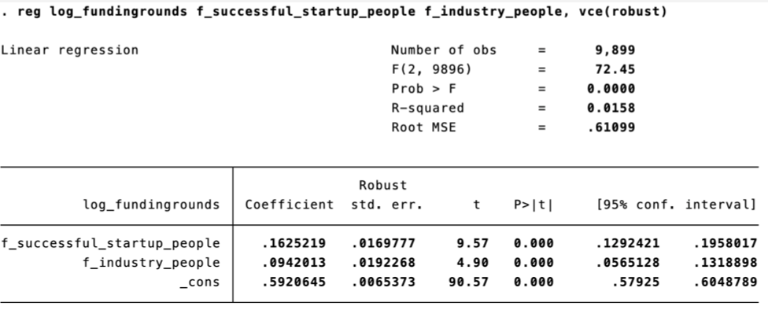
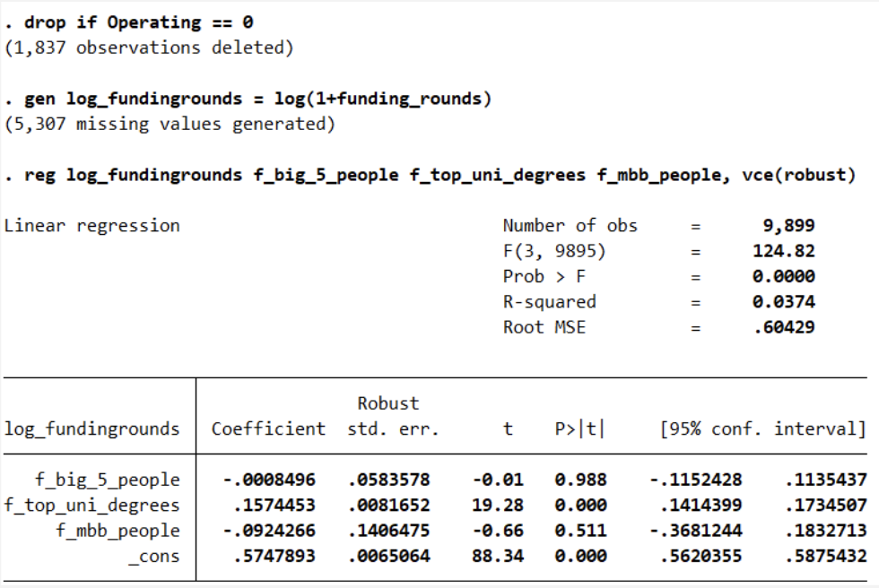

Data Description
The data was provided by a Bocconi course, Data-Driven Analysis and Decision-Making in Business. It reports information about 11736 startups founded between 1995 and 2014 in the U.S., U.K., Italy, and Israel. There are 44 columns of data from each startup from the following categories:
- Basic company information
- Name
- Founding / closing dates
- Industry
- Whether it is still operative or acquired/IPO/closed
- Country & region
- Startup founding team and employees' educational backgrounds
- Types of degrees: CS, business, math/physics, law, or social
- Top general universities or top business schools
- Startup founding team and employees' professional experiences
- Previous experience from leading technology companies (Google, Microsoft, Amazon, Apple, or Facebook) or top strategy consulting firms (McKinsey, Boston Consulting Group or Bain & Company)
- Previous experience from the same industry as the startup
- Previous experience from successful startup or another startup which failed
- Serial entrepreneur whose another startup was successful or failed
- Funding round info and funds raised
- Dates of first & last founding rounds (if any)
- Number of founding rounds
- Total funding raised in US dollars
Research Question
We set out a research question that oriented our analyses:
- What are the main founding team characteristics that VCs look at when it comes to financing startups?
Hypotheses
The most promising firms – those of which the founding team has previous quality experience at another startup, successful firm, or has worked in the same industry – will have a higher probability of receiving financing from VCs. Here are the two theories to be tested:
- Startups whose founders already had a successful business in the past and/or in the same industry are more likely to develop into promising firms.
- Startups whose founders graduated from top universities and have management experience are more likely to develop into promising firms.
Highlights of Relevant Findings by Theory
Theory I
Both of the independent variables used (number of founders in a team who have another experience from a successful startup; number of founders in a team with another experience from the same industry as the startup they now founded) were statistically significant positive correlation with the number of funding rounds received by the startup. Thus, a firm is more likely to receive funding if the founders on the team have both/either experience from a successful startup or experience in the same industry as the startup they now founded. 
Theory II
Out of the three independent variables used (number of founders with experience in Big 5 tech companies; number of top university degrees in the founding team; number of founders with experience from leading consulting firms), only "f_top_uni_degrees" is a statistically significant positively correlated predictor of number of founding rounds. Not only were Big 5 and MBB experiences not statistically significant, they also have negative coefficients. This is counterintuitive because, logically, these ex-Big-Tech and ex-MBB consultant would be able to bring expertise and network from their previous role to increase the chances of procuring funding. Perhaps, due to their former career, they might have developed a structured way of thinking that works for big firms but hinders creativity, which is critical to the success of startups. 